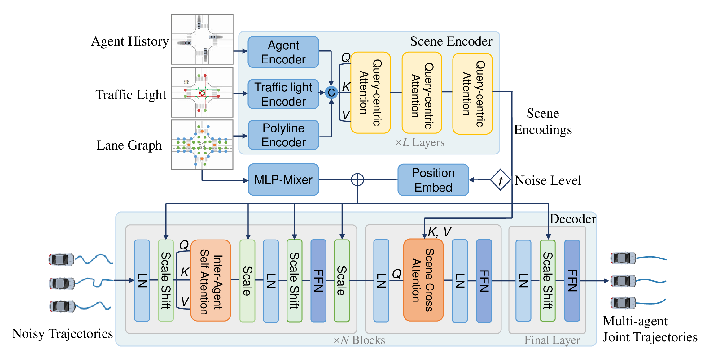
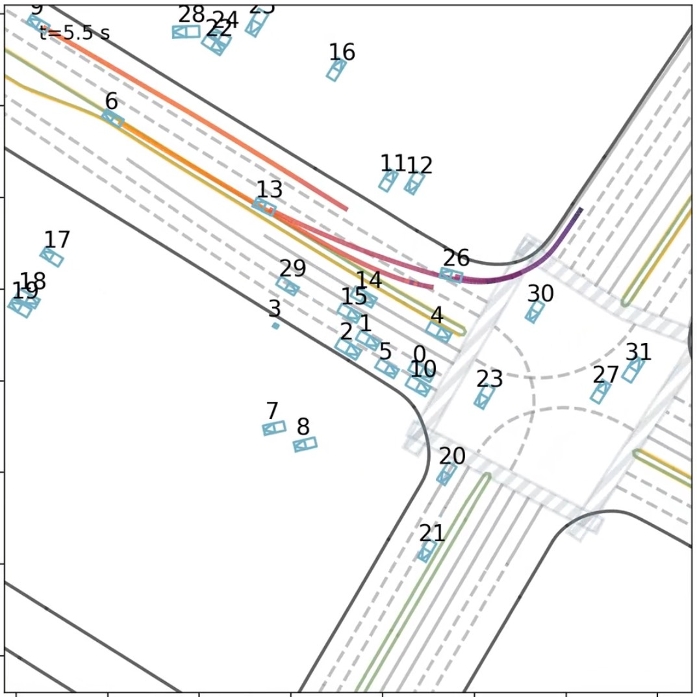
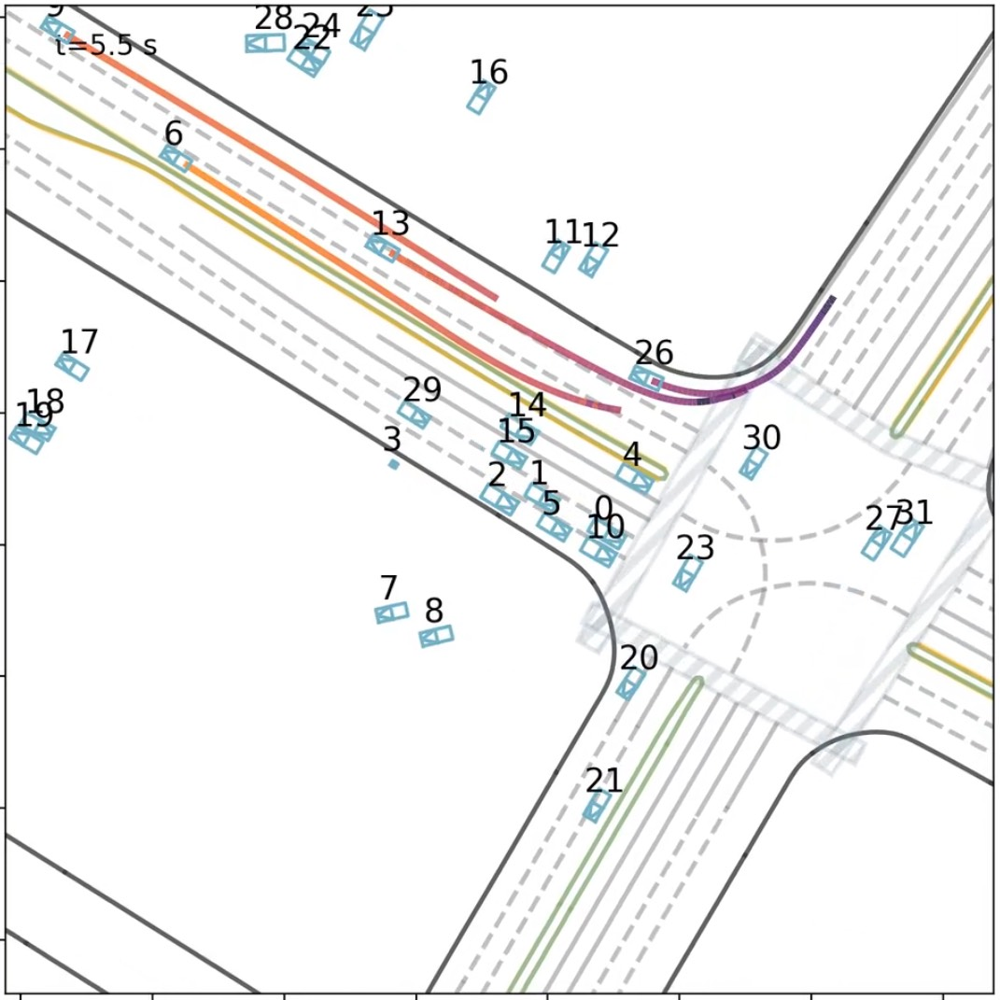

Multi-ORFT: Stable Online Reinforcement Fine-Tuning on Diffusion-Based Multi-Agent Planning for Cooperative Driving
Scene condition-enhanced diffusion pre-training with stable online RL post-training for safer, more efficient cooperative driving.
Abstract
Closed-loop cooperative driving requires generating multimodal and interaction-realistic multi-agent trajectories while optimizing safety and traffic efficiency. Although diffusion planners pretrained by imitation can capture multimodal interaction realism, they remain weakly aligned with closed-loop cooperative objectives, and stable online reinforcement learning (RL) post-training in reactive multi-agent settings remains challenging. We propose Multi-ORFT, a scene-consistent and cooperative multi-agent planner that explicitly couples scene condition-enhanced diffusion pre-training with stable online RL post-training. For pre-training, we build a multi-agent denoising network through inter-agent self-attention and dual-path scene conditioning to enhance scene consistency and road adherence of joint trajectories. For post-training, we develop a stable online RL framework that co-designs dense, well-shaped rewards and variance-gated group relative policy optimization (VG-GRPO), thus strengthening safety- and efficiency-oriented cooperative behaviors under closed-loop execution. Extensive experiments demonstrate that Multi-ORFT delivers superior closed-loop planning performance, achieving consistent gains on core safety and efficiency metrics against state-of-the-art open-source baselines on WOMD and alternative post-training paradigms.
Method
Overall pipeline: condition-enhanced diffusion pre-training learns scene-consistent multimodal joint trajectories; stable online RL post-training aligns it with closed-loop safety and efficiency.
Pre-training: Multi-Agent Diffusion Model
Dual-path scene conditioning combines cross-attention and AdaLN-Zero for scene consistency in dense interactions.

Architecture of the multi-agent diffusion planner. A scene encoder captures relational context in a symmetric manner, and a denoising decoder generates joint multi-agent plans via inter-agent attention and scene-conditioned generation, augmented by AdaLN-Zero for stable conditional modulation and constraint enforcement.
Post-training: Online RL with VG-GRPO
Dense rewards + VG-GRPO stabilize training and improve closed-loop safety-efficiency cooperation.

The stable online RL post-training framework has three core components: closed-loop policy rollouts, dense reward evaluation, and our proposed variance-gated group relative policy optimization (VG-GRPO).
Video Results
Local videos cover demonstrations, pre-training vs post-training comparisons, and ablations.
Multi-ORFT Showcase Reel
Comparison Group
Pre-training vs post-training. Pre-training can show undesirable behavior in some scenarios due to imitation-learning limits. Post-training substantially improves closed-loop planning, safety, and efficiency in challenging scenarios.
Ablation Group
AdaLN-Zero ablations with direct w/o vs with comparisons.
Closed-loop Results
Primary objectives: collision rate (CR), off-road rate (OR), average speed (AS). Secondary diagnostics: ADE, Kin.
WOMD Testing Interactive Split
| Method | CR ↓ | OR ↓ | AS ↑ | ADE ↓ | Kin ↓ |
|---|---|---|---|---|---|
| TrafficBotsV1.5 | 2.74 ±0.21 | 1.79 ±0.14 | 8.03 ±0.48 | 1.68 ±0.09 | 0.26 ±0.02 |
| SMART-large | 2.22 ±0.09 | 1.58 ±0.10 | 8.34 ±0.30 | 1.30 ±0.01 | 0.21 ±0.01 |
| VBD | 2.46 ±0.14 | 1.92 ±0.18 | 8.08 ±0.52 | 1.41 ±0.02 | 0.24 ±0.01 |
| SMART-tiny-CLSFT | 2.10 ±0.10 | 1.53 ±0.12 | 8.47 ±0.44 | 1.23 ±0.03 | 0.25 ±0.02 |
| Multi-ORFT | 1.89 ±0.12 | 1.36 ±0.08 | 8.61 ±0.46 | 1.36 ±0.04 | 0.32 ±0.03 |
Values are mean ± std over repeated closed-loop evaluations in the same simulator configuration.
Effect of Post-training Strategy
| Method | CR ↓ | OR ↓ | AS ↑ | ADE ↓ | Kin ↓ |
|---|---|---|---|---|---|
| Pre-trained only | 2.04 ±0.11 | 1.68 ±0.10 | 8.36 ±0.42 | 1.28 ±0.02 | 0.25 ±0.02 |
| SFT | 2.01 ±0.07 | 1.64 ±0.06 | 8.37 ±0.36 | 1.15 ±0.015 | 0.25 ±0.01 |
| DPO | 1.97 ±0.13 | 1.58 ±0.09 | 8.15 ±0.39 | 1.33 ±0.04 | 0.27 ±0.01 |
| Offline RL | 2.18 ±0.09 | 1.82 ±0.14 | 8.98 ±0.68 | 1.37 ±0.05 | 0.26 ±0.02 |
| Multi-ORFT (Online RL) | 1.89 ±0.12 | 1.36 ±0.08 | 8.61 ±0.46 | 1.36 ±0.04 | 0.32 ±0.03 |
Qualitative: Pre-training vs. Post-training

Example rollout: online post-training improves conflict resolution (safety) and overall traffic progress (efficiency) with longer training.
Stability: Road Consistency (AdaLN-Zero)


AdaLN-Zero scene-conditioned modulation improves boundary adherence in dense interactions, reducing off-road events.
Ablations
Compact summaries. Full details and protocols are in the paper PDF.
AdaLN-Zero
| Setting | CR ↓ | OR ↓ | AS ↑ | ADE ↓ | Kin ↓ |
|---|---|---|---|---|---|
| w/o AdaLN-Zero | 2.11 | 2.05 | 8.40 | 1.30 | 0.26 |
| with AdaLN-Zero | 2.04 | 1.68 | 8.36 | 1.28 | 0.25 |
VG-GRPO
| Gating std1/std2 | Collapse step | CR ↓ | OR ↓ | AS ↑ | ADE ↓ | Kin ↓ |
|---|---|---|---|---|---|---|
| w/o gating | ≈ 0.5M | 2.15 | 2.03 | 8.05 | 1.74 | 0.40 |
| 0.03/0.06 | - | 1.89 | 1.36 | 8.61 | 1.36 | 0.32 |
| 0.00/0.06 | ≈ 2.0M | 2.01 | 1.57 | 8.42 | 1.42 | 0.30 |
| 0.03/0.09 | - | 1.96 | 1.50 | 8.49 | 1.30 | 0.29 |